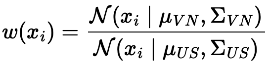
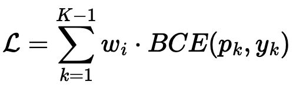
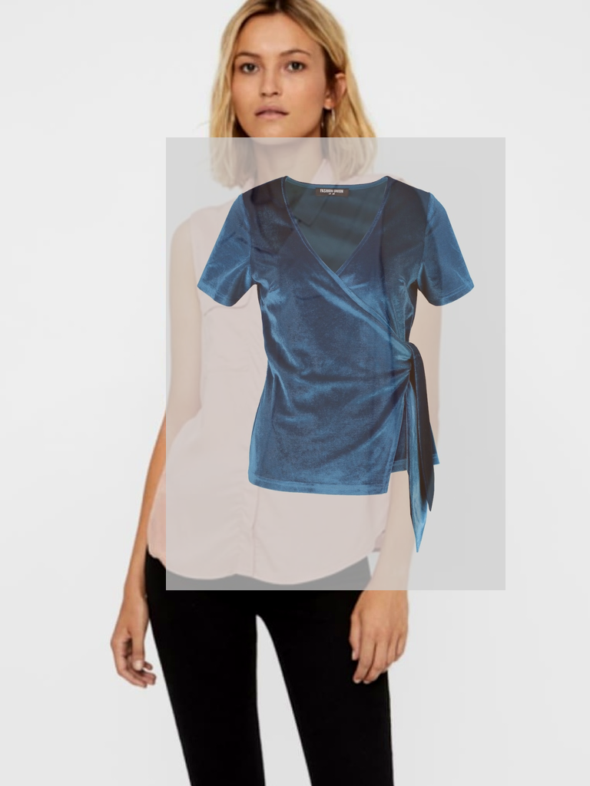
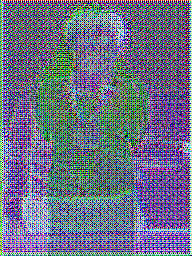

Báo cáo kỹ thuật
EA-VTON: Báo cáo 19/04/2026
- Đây là một hệ thống gồm hai nhánh khác nhau: gợi ý size bằng AI và thử đồ ảo bằng xử lý hình ảnh.
- Mốc báo cáo: 19/04/2026; mã nguồn được tổng hợp tại thời điểm 22/04/2026.
- Mục tiêu: gom các thử nghiệm rời rạc thành một quy trình hoàn chỉnh, trong đó mỗi nhánh có mục tiêu, cách làm và cách đo riêng.
Trọng tâm của tuần là dừng các claim ước lượng và thay bằng số chạy thật cho từng nhánh. Size recommendation hiện đã có kết quả train/eval và một vòng tuning ngay trong repo. Virtual try-on thì đã chạy được pipeline, nhưng chất lượng ảnh vẫn chưa đủ mạnh để khóa deck như một thành quả hoàn chỉnh.
Điểm mới là: nhánh size giờ đã có một improvement nhỏ nhưng thật, với VN-range Within-1 đạt 70.97% ở cấu hình GBM tuning, còn nhánh VTON được giữ ở trạng thái working pipeline chứ không thổi phồng thành kết quả đẹp.
size recommendation là nhánh nghiên cứu chính; VTON là nhánh engineering. Phần sau của deck sẽ nói rõ số nào đã chạy thật, số nào đã dùng để chốt candidate, và phần nào vẫn chưa được claim.
System Overview
Hệ thống có 2 nhánh khác nhau
| Phần hệ thống | Size recommendation | VTON |
|---|---|---|
| Bài toán | Dự đoán size phù hợp | Tạo ảnh mặc thử |
| Đầu vào chính | Chiều cao, cân nặng, đặc trưng cơ thể, loại sản phẩm | Ảnh người + ảnh quần áo |
| Đầu ra | Size, confidence, số đo ước lượng | Ảnh thử đồ |
| Tính chất | Phần nghiên cứu chính | Kỹ thuật triển khai / reuse CV |
| Cách đo | Accuracy, within-1, bias, ESS | Tốc độ, chất lượng ảnh, ổn định mặt/da |
Luồng tổng thể
Hai nhánh có liên quan ở mức sản phẩm, nhưng không nên trộn thành một bài toán duy nhất. Một nhánh dự đoán, một nhánh dựng ảnh.
Nhánh 1
Size recommendation là phần nghiên cứu chính
- Bài toán chính ở đây là dữ liệu nguồn và nhóm người dùng mục tiêu không giống nhau.
- Nếu học trực tiếp từ dữ liệu hiện có, mô hình dễ gợi ý size bị lệch cho nhóm mục tiêu.
- Hướng được chọn là vẫn dùng dữ liệu hiện có, nhưng tăng trọng số cho những mẫu giống nhóm mục tiêu hơn.
- Sau đó huấn luyện và so sánh các mô hình như GBM và MLP để chọn biến thể phù hợp nhất.
- Đây là nơi chứa phần đóng góp chính về mặt phương pháp của dự án.
Phương pháp cho nhánh size
Giữ lại height, weight, BMI, age, body type và category từ dữ liệu nguồn để train model size.
Dùng thống kê chiều cao, cân nặng và body clusters để mô tả nhóm mục tiêu mình muốn phục vụ.
Nhìn chiều cao và cân nặng như một cặp liên quan thay vì giả sử hai biến độc lập.
Làm mềm tail của trọng số để các mẫu quá hiếm không đẩy quá mạnh quá trình học.
Baseline mạnh nhất và dễ tune nhất trên dữ liệu bảng ở repo hiện tại.
Dùng để kiểm tra neural và ordinal loss có thắng baseline thật hay không.
Đầu ra cuối cho recommendation service.

Trọng số tăng khi một cặp chiều cao - cân nặng giống target hơn source, nên dữ liệu nguồn được kéo gần bài toán thật hơn.

Loss được nhân theo trọng số để model ưu tiên học đúng trên nhóm mục tiêu, thay vì đối xử mọi mẫu như nhau.
Các đặc trưng đầu vào cho mô hình size.
6 biến thể gốc và 2 tuned candidates đang dùng để so sánh ở nhánh size.
Đây là nhánh mang giá trị nghiên cứu chính.
Tối ưu cho nhóm người dùng mục tiêu thay vì chỉ cho tập nguồn.
Nói ngắn gọn, copula giúp mô hình nhìn chiều cao và cân nặng cùng nhau; PSIS giúp tránh để vài mẫu hiếm chi phối kết quả. Đây là phần không nên trộn lẫn với VTON.
Nhánh 2 Và Serving
VTON là phần kỹ thuật phục vụ sản phẩm
| Giai đoạn | Việc thực hiện | Thư mục |
|---|---|---|
| 1 | Tiền xử lý dữ liệu và lập thống kê ban đầu | `research/datasets/` |
| 2 | Gán trọng số bằng copula + PSIS | `research/weighting/` |
| 3 | Huấn luyện mô hình | `research/models/` |
| 4 | Đánh giá và so sánh từng cấu hình | `research/evaluation/` |
| Giai đoạn | Việc thực hiện | Thư mục |
|---|---|---|
| 1 | Nhận dữ liệu người dùng | `apps/web/` |
| 2 | Điều phối request | `apps/api/` |
| 3 | Ước lượng số đo và đặc trưng cơ thể | `services/feature-service/` |
| 4 | Chạy gợi ý size và dựng ảnh thử đồ | `services/recommendation/`, `services/vton-service/` |
Luồng phục vụ end-to-end
- Nhánh size là nơi có phần thích nghi miền và so sánh mô hình.
- Nhánh VTON chủ yếu là tích hợp kỹ thuật CV / compositing để tạo ảnh đầu ra.
- Hai nhánh gặp nhau ở API cuối, nhưng cách đo và cách cải tiến khác nhau.
README hiện tại cũng tách rõ: size recommendation là core research; VTON là engineering-only và ưu tiên tái sử dụng model / backend có sẵn.
Khung đánh giá
Khung đánh giá tách riêng cho 2 nhánh
- Mức đúng hoặc chỉ lệch tối đa 1 size trên nhóm VN tăng khoảng 2 điểm phần trăm so với mốc hiện tại.
- Độ giảm trên toàn bộ tập thử không vượt quá 1 điểm phần trăm.
- Xu hướng dự đoán lệch trên nhóm VN cần tiến gần về 0.
- Số mẫu hiệu dụng của copula + PSIS phải tốt hơn cách gán trọng số độc lập.
- So sánh rõ giữa thời gian chạy và chất lượng ảnh đầu ra.
- Giữ khuôn mặt và vùng da ổn định giữa các cấu hình khác nhau.
- Duy trì cùng một mốc đo để tiện so sánh giữa các vòng.
Biểu đồ cột 1: Mức độ ưu tiên khi đánh giá phần size
Biểu đồ cột 2: Mức độ ưu tiên khi đánh giá phần thử đồ
Slide này là khung để đọc đúng các số thật ở phần sau. Nhánh size nhìn theo within-1, bias và ESS; nhánh VTON nhìn theo chất lượng ảnh và khả năng phục vụ, không trộn hai bộ metric với nhau.
Nhánh 1 Kết quả thật
Kết quả thật của size recommendation sau tuning trong repo
| Điểm nhìn | Kết quả nổi bật | Ý nghĩa |
|---|---|---|
| Full test | GBM baseline (không gán trọng số) giữ Within-1 tốt nhất: 83.37% | Baseline toàn tập vẫn rất mạnh và là mốc để khống chế degradation. |
| Tuning thật trong repo | GBM copula + temper (alpha = 0.75) nâng VN Within-1 lên 70.97% | Cải thiện nhỏ nhưng thật, vẫn nằm trong cùng pipeline của repo. |
| VN-range Top-1 | GBM độc lập + temper (alpha = 0.5) tốt nhất: 51.46% | Nếu ưu tiên exact size, tempering trên independent hiện nhỉnh hơn. |
| GO / NO-GO | MLP + CORN + copula = NO-GO | Neural + ordinal hiện chưa vượt các baseline GBM đã tune. |
| PSIS đúng split train | k-hat ≈ -0.001 | Số 7.171 trước đó đến từ full fit chưa lọc size label, không nên dùng làm claim chính. |
GBM baseline là model không gán trọng số. GBM độc lập là gán trọng số riêng cho chiều cao và cân nặng. GBM copula là gán trọng số theo cặp chiều cao - cân nặng. Temper nghĩa là làm mềm trọng số bằng lũy thừa nhỏ hơn 1 để giảm ảnh hưởng của các mẫu quá cực đoan.
Biểu đồ 1: Top-1 trên nhóm VN-range
Top-1 nghĩa là dự đoán đúng exact size.
Biểu đồ 2: Within-1 trên nhóm VN-range
Within-1 nghĩa là dự đoán đúng hoặc chỉ lệch tối đa 1 size.
- Tuning có tác dụng thật: tempering trọng số giúp nhích lên ở nhóm VN mà không làm hỏng full-test Within-1.
- ESS trên đúng train split: independent = 10.95%, copula + PSIS = 24.09%.
- k-hat trên đúng train split: -0.001, nên câu chuyện PSIS ở nhánh size thực tế khỏe hơn số đang nằm trên deck cũ.
- Max weight: independent = 71.57, copula + PSIS = 56.88.
- Body regression: Ridge đạt avg MAE 2.10 cm, avg R² 0.837.
Sau khi chạy thêm một vòng tuning ngay trong repo, câu chuyện không còn hoàn toàn “mixed”: GBM với tempered weighting cho ra một improvement nhỏ nhưng thật trên nhóm VN. Đây vẫn chưa phải bước nhảy lớn, nhưng là kết quả có thể bảo vệ được.
Nhánh 2 Visual trạng thái
Trạng thái thật hiện tại của VTON

Đây là output vừa chạy lại trên sample có sẵn. Chạy rất nhanh nhưng còn lộ overlay và chưa đủ tự nhiên.

Output rất nhiễu, chưa thể dùng làm ảnh demo hay benchmark chất lượng.
Biểu đồ 3: Chỉ số thật của local_composite rerun
- Có thể chạy được: backend local chạy lại thành công và trả metadata thật.
- Chưa đạt chất lượng demo tốt: ảnh local còn kiểu dán chồng, chưa ăn theo cơ thể.
- Checkpoint trainable chưa usable: output hiện tại còn quá nhiễu.
- Ở nhánh này nên kể là đã có pipeline chạy, nhưng chưa có benchmark chất lượng đủ mạnh để khoe.
Nếu cần kể câu chuyện trung thực nhất: VTON hiện có demo fallback chạy nhanh, nhưng phần ảnh đẹp / học được từ checkpoint vẫn chưa đạt. Đây là chỗ cần đầu tư thêm nếu muốn đưa lên slide như một kết quả mạnh.
Kết luận Và Kế Hoạch
Kết luận và cách khóa deck bằng số thật
- Deck hiện tại không còn chỉ là kế hoạch: nhánh size đã có số train/eval thật và một ứng viên tune tốt hơn ngay trong repo.
- Cấu hình nên giữ làm candidate chính là gbm_copula_tempered_a075, vì nó nâng VN Within-1 lên 70.97% và vẫn giữ Full-test Within-1 ở 83.18%.
- GBM độc lập + temper (alpha = 0.5) vẫn đáng giữ làm đối chứng vì exact Top-1 trên VN đang cao nhất: 51.46%.
- Research endpoint của recommendation service hiện đã được đổi sang candidate tuned, nên bước tiếp theo là đo lại luồng end-to-end chứ không còn chỉ là đổi model trên slide.
- Nhánh VTON vẫn phải nói trung thực là có pipeline chạy, nhưng chưa có output đủ mạnh để coi là benchmark đẹp.
Lộ trình cập nhật slide bằng số thật
- Rerun weighting, subset evaluation và body regression.
-
Đã sửa lại cách đọc
k_hattheo đúng split train thực tế.
-
gbm_copula_tempered_a075: VN W1 = 70.97%. -
GBM độc lập + temper (alpha = 0.5): VN Top-1 = 51.46%. -
/recommend-size/researchhiện mặc định dùng candidate tuned.
-
Rerun
/api/pipelineđể lấy kết quả end-to-end với candidate mới. - Lấy thêm một bộ request mẫu để chụp output và log latency ở mức hệ thống.
- Khóa lại chart và script theo đúng candidate đã chọn, không giữ số cũ nữa.
- Không dùng model ngoài repo chỉ để có ảnh đẹp hơn.
- VTON chưa đủ visual quality nên chưa được kể như một kết quả mạnh.
Điểm quan trọng nhất không phải là “đã có kết quả đẹp chưa”, mà là mình đã có một vòng cải thiện thật trong repo và biết rất rõ nhánh nào đang khỏe, nhánh nào vẫn chưa đủ điều kiện để claim.
Nếu cần chốt một câu ngắn ở slide cuối: size recommendation đã có improvement thật và có thể tiếp tục khóa candidate; VTON thì nên giữ ở trạng thái engineering baseline cho đến khi chất lượng ảnh đủ tốt.
Thuật Ngữ Và Lý Do Chọn Hướng
Giải nghĩa nhanh các term chính
| Term | Giải nghĩa dễ hiểu |
|---|---|
| GBM | Mô hình học bằng nhiều cây quyết định nối tiếp nhau; cây sau sửa lỗi của cây trước. Rất hợp với dữ liệu bảng. |
| Copula | Cách nhìn chiều cao và cân nặng cùng nhau, thay vì tách rời từng biến. |
| PSIS | Bước làm mềm các trọng số quá lớn để mô hình đỡ học lệch theo vài mẫu hiếm. |
| ESS | Số mẫu “thực sự còn hữu ích” sau khi gán trọng số. ESS cao hơn nghĩa là dữ liệu ổn định hơn khi huấn luyện. |
| Within-1 | Đúng hoặc chỉ lệch tối đa 1 size, phù hợp hơn với cách người dùng thực tế cảm nhận size. |
| Hướng | Điểm yếu chính |
|---|---|
| Rule-based | Nhanh lúc đầu nhưng rất khó tinh chỉnh và khó đo cải thiện dài hạn. |
| Chờ thêm dữ liệu | Đúng về dài hạn nhưng không đáp ứng tiến độ hiện tại. |
| Trọng số độc lập | Đơn giản nhưng bỏ qua mối liên hệ giữa chiều cao và cân nặng. |
| Neural-only | Có tiềm năng nhưng hiện tại chưa ổn định bằng GBM trên dữ liệu bảng. |
| Copula + PSIS + GBM | Cân bằng tốt nhất giữa độ chính xác, độ ổn định, tốc độ train và khả năng đưa vào hệ thống. |
Nhóm không chọn hướng phức tạp nhất, mà chọn hướng phù hợp nhất với nút thắt hiện tại: dữ liệu nguồn và nhóm mục tiêu khác nhau, trong khi mô hình cần dễ đo và dễ đưa vào hệ thống.
Related Work
Các nghiên cứu gần tinh thần Lighter-X
| Nghiên cứu | Ý chính |
|---|---|
| LightGCN | Tối giản GCN cho recommender, chỉ giữ phần lan truyền cốt lõi. |
| UltraGCN | Làm recommender nhẹ hơn bằng cách bỏ message passing tường minh. |
| JGCF | Nhìn graph collaborative filtering theo góc nhìn phổ để lọc tín hiệu tốt hơn. |
| LightGCL | Kết hợp graph recommendation với contrastive learning để tăng độ bền và giảm học lệch. |
| Less is More / SVD-GCN | Giữ lại và nhấn mạnh các tín hiệu graph quan trọng thay vì dùng mọi tín hiệu như nhau. |
| Lighter-X | Đi theo hướng plug-and-play, decoupled propagation và giảm tham số rất mạnh trên graph lớn. |
- Đều ưu tiên cách làm gọn hơn, nhẹ hơn và dễ cắm vào hệ thống sẵn có.
- Đều nhấn mạnh việc chỉ giữ phần thực sự quan trọng thay vì làm mô hình ngày càng nặng.
- Đều coi benchmark rõ ràng là một phần của thiết kế, không phải phần làm sau cùng.
- Các paper gần Lighter-X chủ yếu xử lý bài toán graph recommender lớn và đắt.
- Nút thắt chính của EA-VTON hiện tại không phải graph quá nặng, mà là dữ liệu nguồn và nhóm mục tiêu khác nhau.
Lighter-X báo cáo hướng decoupled propagation và framework plug-and-play giúp giảm rất mạnh số tham số trên graph lớn. Đây là nguồn tham khảo tốt về tư duy thiết kế, nhưng không phải phương pháp mà dự án hiện tại triển khai trực tiếp.